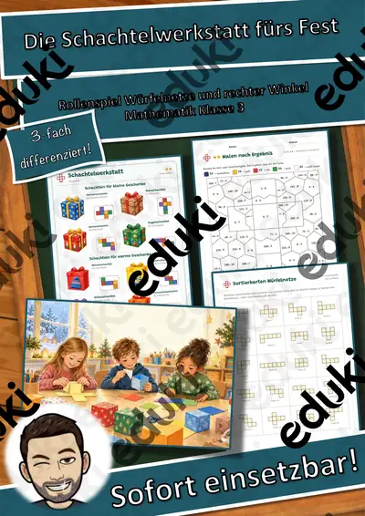

Der Aufzug – Lesespurgeschichte mit Rätselaufgaben (Klasse 8)
Mit dieser differenzierten Lesespurgeschichte erarbeiten die Lernenden selbstständig und motivierend, wie ein Aufzug aufgebaut ist und warum er schwere Lasten mit wenig Kraft und sehr sicher hebt – vom Antriebsmotor über Umlenkrolle, Kabine, Kabinentür und Fangvorrichtung bis zu Führungsschiene, Gegengewicht und Puffer. Lena und Jonas erkunden mit der Aufzugstechnikerin Frau Winkel den Aufzug.
So funktioniert die Lesespur: Die Lernenden lesen einen Abschnitt, entnehmen dem Hinweis ein Bauteil des Aufzugs, suchen es auf dem farbigen Aufzug-Plan (einer anschaulichen Schnittzeichnung) und lesen dort weiter. An jeder richtigen Station sammeln sie einen Buchstaben. Vier Sackgassen (Blumentopf, Fenster, Mülleimer, Hydrant) dienen der Selbstkontrolle und machen deutlich, dass diese Dinge zwar zum Gebäude gehören, aber keine Teile des Aufzugs sind. Am Ende ergeben die gesammelten Buchstaben – nach dem Umstellen – ein geheimes Lösungswort: das Fachwort für das dicke Stahlseil, an dem die Kabine hängt.
Inhaltlich verbindet das Material Physik mit Alltagstechnik: das Prinzip des Gewichtsausgleichs durch ein Gegengewicht, die Umlenkung der Kraft über Seil und Rolle sowie Sicherheitseinrichtungen wie Fangvorrichtung und Puffer. Anschaulich, altersgerecht und mit direktem Alltagsbezug.
Das ist enthalten:
- Lesespurgeschichte in drei Niveaus (leicht, mittel, schwer) – ideal zur Differenzierung
- farbiger Aufzug-Plan (Schnittzeichnung) mit allen Bauteilen
- vier eingebettete Aufträge: Begriffe verbinden, Quiz, Rechenaufgabe, Steckbrief
- Hörverstehen mit QR-Code zum Hörtext (Teil A Ankreuzen, Teil B frei schreiben)
- Rätselseite (Wörter-Suchsel und Wissensquiz)
- Ausmalbild
- ausführliches Lösungsblatt mit Fundorten
- das komplette Material zusätzlich als drucksparende Schwarz-Weiß-Vorlage
Geförderte Kompetenzen: sinnentnehmendes und selektives Lesen, Anwenden von Lesestrategien, konzentriertes Zuhören sowie das fachliche Verständnis von Kraft, Gewichtsausgleich und Sicherheitstechnik.
Einsatz: Übungsphasen, Wochenplan, Stationenlernen, Vertretungsstunden, Freiarbeit und Nachhilfe. Umfang: 24 Seiten.
Ähnliche Materialien

Kraft Lückentext mit Wortspeicher Hörverstehen und Suchsel

Computer im Alltag – wo überall Computer stecken – Lesespurgeschichte mit Rätselaufgaben (Klasse 1)

Die Schachtelwerkstatt fürs Fest – Rollenspiel Würfelnetze und rechter Winkel, 3-fach differenziert (Klasse 3)

Elektronik Lückentext mit Wortspeicher Hörverstehen und Suchsel

Bohren an der Ständerbohrmaschine – sicher und genau – Lesespurgeschichte mit Rätselaufgaben (Klasse 7)

Rettungsschwimmen – sicher im Wasser helfen – Lesespurgeschichte mit Rätselaufgaben (Klasse 9)

Sicher unterwegs im Verkehr – Lesespurgeschichte mit Rätselaufgaben (Klasse 5)